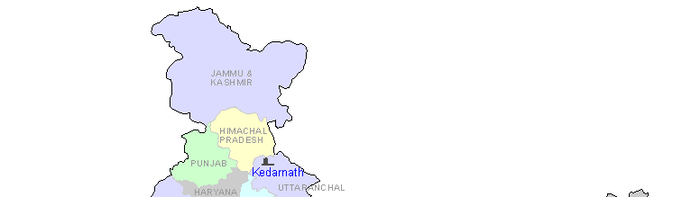
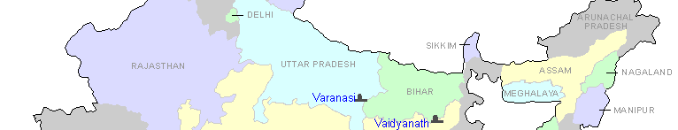
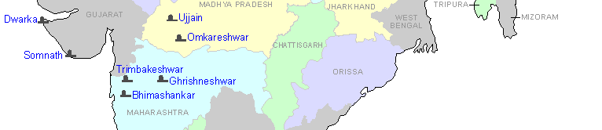
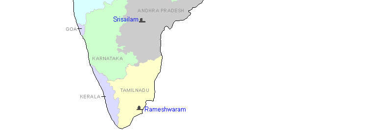

DWAADASA (12) JYOTIRLINGAMS IN
INDIA
The following slogam explains the twelve points in India where the Jyotir Lingams are situated
Saurashtre Somanaatham Cha Sree Saile Mallikarjunam
Ujjayinyaam Mahaakaalam Omkaare Mamaleswaram
Himalaye to Kedaram Daakinyaam Bhimashankaram
Vaaranaasyaam cha Viswesam Trayambakam Gowtameethate
Paralyaam Vaidyanaatham cha Naagesam Daarukaavane
Setubandhe Ramesham Grushnesam cha Shivaalaye ||
Please click on any of the 12 places in the map below for more details



 |